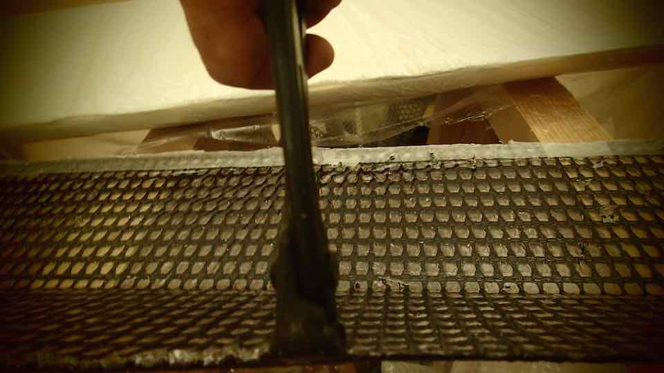
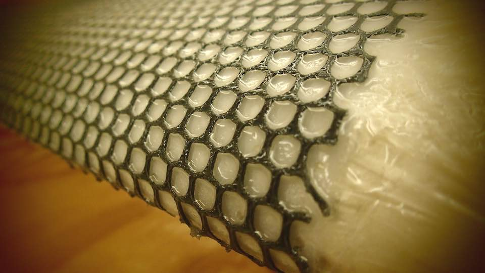
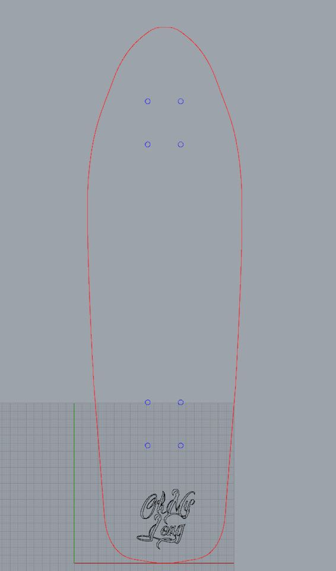
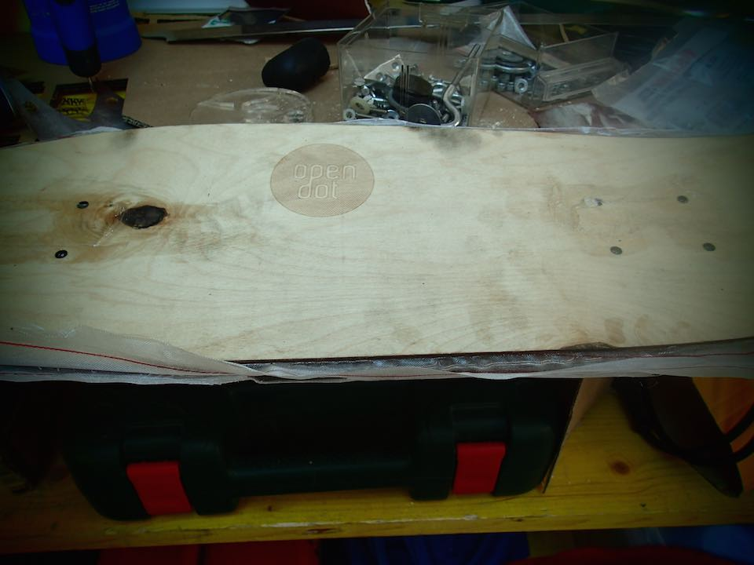
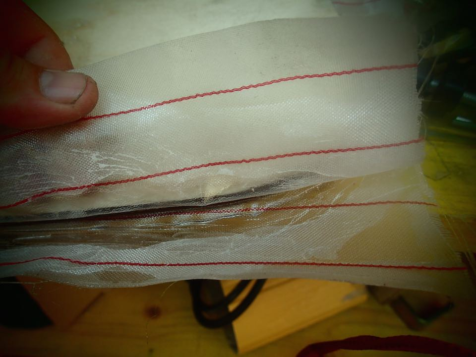
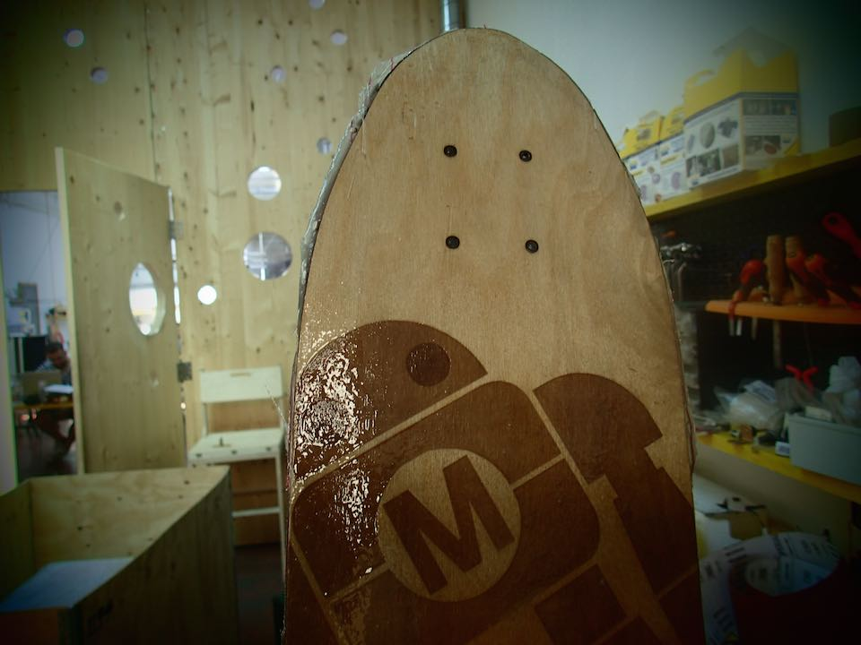

****************************************************************************************************************
ASSIGNMENT: DESIG AND MAKE A 3D MOLD AND PRODUCE A FIBER COMPOSITE PART IN IT
PROJECT: COMPOSITE FAB LAMP
MACHINE: SHOPBOT PRS STANDARD CNC
SOFT: RHINOCEROS // PARTWORKS 3D
MATERIAL: POLYURETHANE BLOCK // SUPER SAP CLR EPOXY RESIN // TREVIRA CS TEXTILE
DOWNLOAD:
****************************************************************************************************************
PART 1 --> USE RHINOCEROS FOR MODELLING THE 2D/3D STRUCTURE OF MY LAMP
First af all I have prepared in Rhino a parallelepiped whit the same dimention of the polyuretane block :
121 mm X 59 mm X 6 mm
I cut it in 2 vertical parts and create in the 1st one a triangular solid and in the second one a cylinder solid.

PART 2 --> PUT THE POLYURETANE BLOCK IN THE MACHINE // SETTING PARTWORKS 3D // MILL IT
After fix the polyuretane block in the work table of CNC machine with same screws and hot glue, I have set the parameter of Partworks 3D.


This is the final result of milled polyuretane block
PART 3 --> PREPARING THE MILLED POLYURETANE PARTS AND THE FIBERS // MIX THE EPOXY RESIN // COMPOSE THE ELEMENTS
I close the holes with some masking tape
Use same clear plastic for make the surface smooth and prevent that the epoxy resin paste with the polyuretane


I cut the Trevira CS fiber to the good size

Mix the 2 Part of Epoxy : 2 part of Resin for 1 part of Harder

Apply the mixed resin first on the structure whit a paint brush.
Quickly lay out the texture and apply the mixed resin.


After 10 hours the composite is ready

Now is time to clean the residual resin and tape.

Repete the same process for the cylinder solid and the 2nd layer of textile



****************************************************************************************************************
EXTRA PROJECT: COMPOSITE LASER CUTTED SK8 BOARD WITH VINIL CUTTER STIKERS
MATERIAL: PLYWOOD 3MM // SUPER SAP CLR EPOXY RESIN // POLYESTER FIBER
SOFT: RHINOCEROS // ROLAND CUT STUDIO
MACHINE: GCC SPIRIT GLS // ROLAND CAM 1 SERVO GX 24
DOWNLOAD :
****************************************************************************************************************
COOL extra exercise of composite and laser and vinil cutter.
I have find the project in the acrtivity of Fab Lab Barcellona HERE




